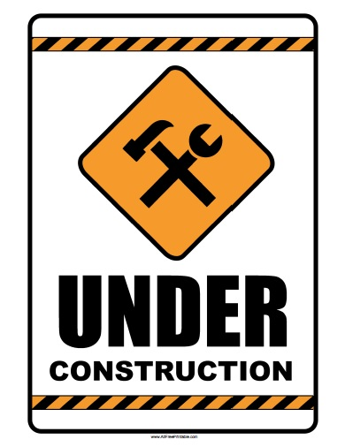

Query some data!
Query our databases for study of your interest. You will then be able to fetch the data to our Galaxy istance for analysis.
 Analyze!
Got your hown data you want to analyze?
Perfect! You can directly upload them to our Galaxy istance and analyze them. We are constantly working to implement most of the tool you can find in our guide to our Galaxy istance.
Go to our GALAXY istance
Or you can visit the main Galaxy site to use their test istance and to explore the various analisys tools avaliable, or go to the Galaxy Wiki page to get further information.